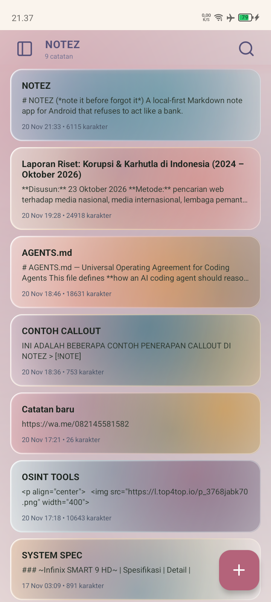
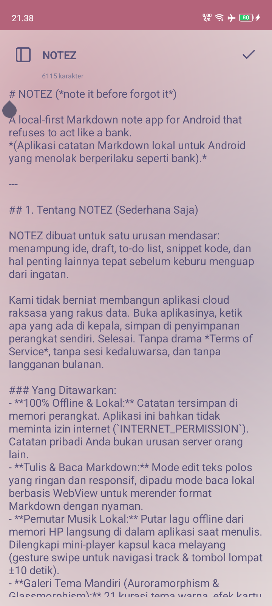

Catatan Markdown.
Nol Ketergantungan.
*note it before forgot it
Dibangun murni untuk kecepatan dan privasi. Catatan tersimpan di penyimpanan lokal perangkat, engine Markdown terbundel di dalam APK, dilengkapi pemutar audio fokus lokal tanpa kuota internet.

Direkayasa untuk Kerapian dan Konsentrasi
Pilih modul di bawah untuk memeriksa perilaku teknis dan tampilan antarmuka.
Mode Pratinjau Markdown Terisolasi
Engine markdown-it dibundel langsung di aset APK. Seluruh koneksi jaringan WebView diblokir secara native, menolak injeksi script luar dan merender dokumen Markdown CommonMark secara instan.
- Dukungan heading, task list, tabel data, kutipan, dan blok kode
- Sinkronisasi rasio gulir otomatis antara mode baca dan mode edit
- Gambar jarak jauh dikunci di latar belakang kecuali diminta pengguna

Fondasi Teknis Tanpa Kompromi
Arsitektur dibangun agar aplikasi dapat bertahan bertahun-tahun tanpa butuh maintenance server.
Penyimpanan Lokal SQLite Room
Seluruh entri catatan disimpan dalam sandbox privat SQLite terindeks. Query pencarian diparameterisasi penuh, menjamin responsivitas tinggi dan bebas dari celah injeksi SQL.
Storage Access Framework (SAF)
Ekspor dan impor berkas catatan memanfaatkan SAF native Android. Pengguna memegang kendali atas berkas .md dan .json mereka sendiri tanpa penguncian format vendor.
Layanan Audio Latar Media3
Pemutar audio fokus berjalan sebagai Foreground Service AndroidX Media3 mandiri. Audio lokal tetap menyala saat layar ponsel mati tanpa gangguan streaming jaringan.
Perbandingan Kejujuran: Catat di Atas Batu vs NOTEZ
Uji komparasi realistis antara media penyimpanan purba dan aplikasi Android modern.
| Parameter Evaluasi | Catat di Atas Batu | Aplikasi NOTEZ | Status Pemenang |
|---|---|---|---|
| Ketahanan Fisik | Bertahan hingga puluhan ribu tahun melewati banjir, perang, dan cuaca ekstrem. | Tergantung pada usia pakai perangkat keras memori flash ponsel (3–7 tahun). | Batu Menang |
| Konsumsi Daya | Nol watt. Tidak membutuhkan pengisian baterai seumur hidup. | Membutuhkan daya baterai ponsel aktif. | Batu Menang |
| Privasi Default | Dapat dibaca oleh siapa saja yang melintasi gua atau prasasti. | Tersimpan di sandbox aplikasi lokal pribadi tanpa transmisi cloud. | NOTEZ Menang |
| Kecepatan Modifikasi | Membutuhkan pahat dan palu untuk mengikis atau membuat lempengan baru. | Pengeditan teks instan dalam milidetik dengan riwayat modifikasi lokal. | NOTEZ Menang |
| Bobot dan Mobilitas | Sekitar 20–50 kilogram per lempeng batu prasasti. | Hanya 3.1 megabyte di ruang penyimpanan Android. | NOTEZ Menang |
| Sintaks Markdown | Pahatan hieroglif manual tanpa standarisasi. | Mendukung penuh parser CommonMark standar, tabel, dan blok kode. | NOTEZ Menang |